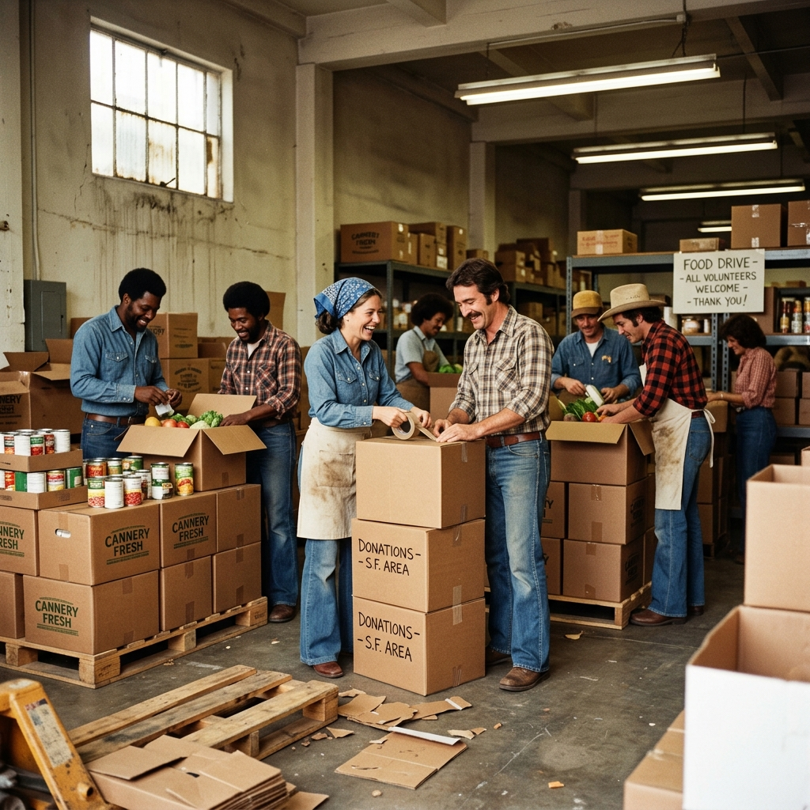
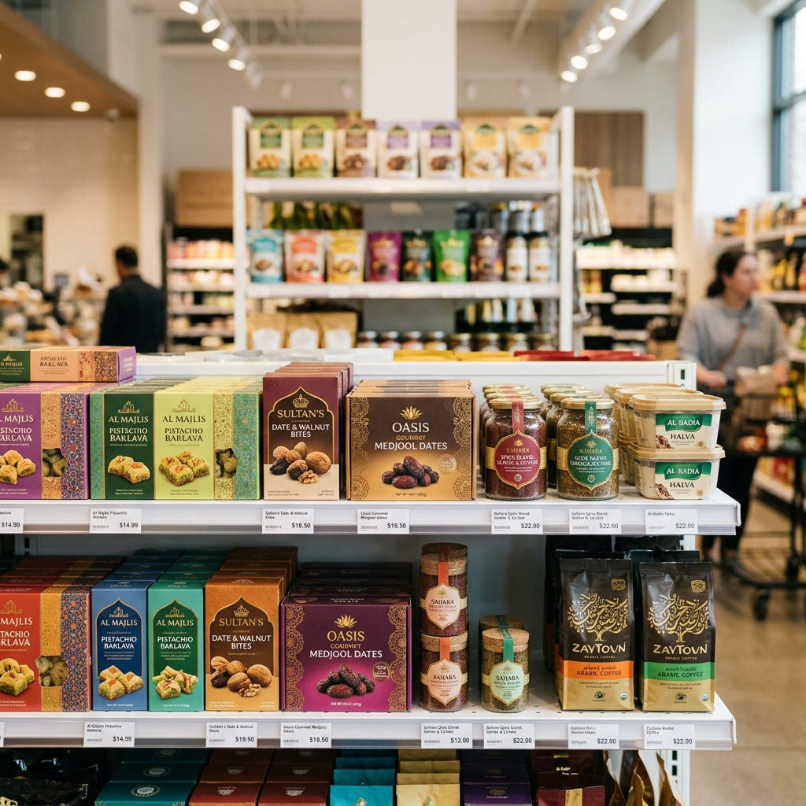
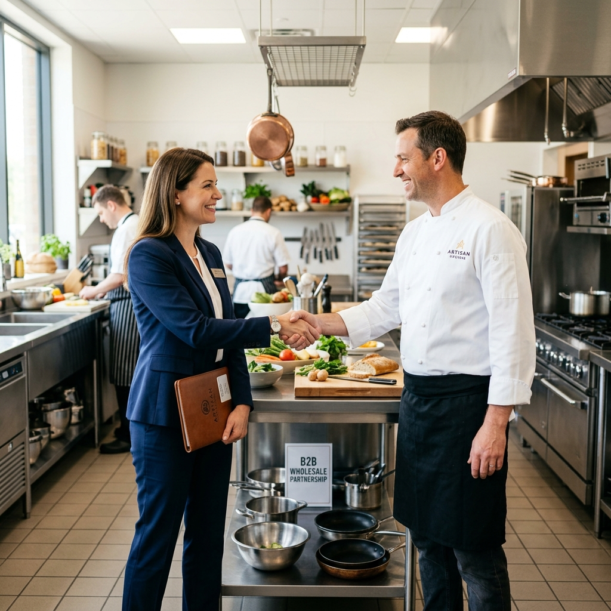
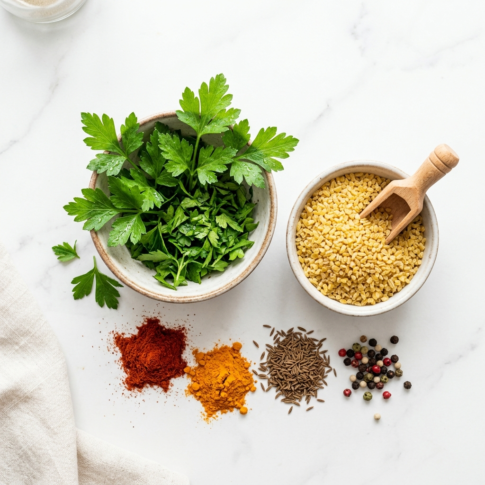

En passion för mat som gått i arv sedan 1945
Mathörnet i Strängnäs är en förlängning av årtionden av familjeerfarenhet inom livsmedelsproduktion. Vi förenar ett genuint mathantverk med modern tillverkning för att erbjuda Sverige de absolut bästa smakerna från Mellanöstern.
Rötterna i Irak (1945)
Vår resa började redan 1945 i Irak, när morföräldrarna Selma Hanna Dawood och Raouf Rassam lade grunden till familjens livsmedelstillverkning. Selmas djupa förståelse för smaker och Raoufs orubbliga krav på råvarukvalitet skapade produkter som snabbt blev älskade av folket. Det var kompromisslös kärlek till bra mat, för vanligt folk.

Från familjekök till världsledande aktör
Med tiden klev sonen Nabil Rassam in och transformerade verksamheten till vad som idag är Nabil Foods – en världsledande miljardkoncern. Nabil Foods levererar inte bara mat av högsta kvalitet till stora delar av världen, utan är också djupt engagerade i samhällsutveckling och mänskliga rättigheter. Mathörnet i Strängnäs bygger stolt vidare på detta arv, med fullt stöd och löpande samarbete från Nabil och hans team.

Mathörnet i Strängnäs (Nutid)
Den 1 juni 2026 slår vi upp portarna till vår nya produktionsanläggning i Strängnäs. Med toppmodern utrustning bygger vi en effektiv produktionslinje med en fantastisk arbetsmiljö. Vår matexpert Fade Allose och brodern Yousif står redo att blanda ingredienserna, förfina klassikerna och experimentera fram helt nya, spännande produkter för den svenska marknaden.
Nutid, Företag & Miljö

Våra Produkter
Vi tillverkar och färdiglagar autentisk mat såsom Kubbah Traboulsie, ostrullar, piroger och minipizzor. Utöver våra älskade klassiker lanserar vi även en helt ny vegetarisk linje baserad på nyskapande falafelvarianter. Allt tillagas på plats och fryses in direkt för maximal fräschör.

Företag & Framtidstro
Mathörnet i Strängnäs AB drivs av Yosef Fidan. Med ett starkt driv, en kompetent personalstyrka och värdefull stöttning från Almi har vi skapat de bästa förutsättningarna för att växa. Vår ambition är att förse närområdet med kvalitetsmat, och på sikt även exportera våra innovationer.

Miljö & Säkerhet
Kvalitet innebär trygghet. Genom ett tätt samarbete med ledande miljö- och livsmedelskonsulter säkerställer vi att vår produktion, hantering av råvaror och restprodukter inte bara följer regelverken, utan håller den absolut högsta standarden för framtida certifieringar.
Välkommen till Mathörnet!
Detta är vår historia och vår framtid. Vi finns alltid tillgängliga för dialog, och när vi väl är igång är du varmt välkommen att besöka oss i Strängnäs. Redo att växa med oss?
Kontakta oss